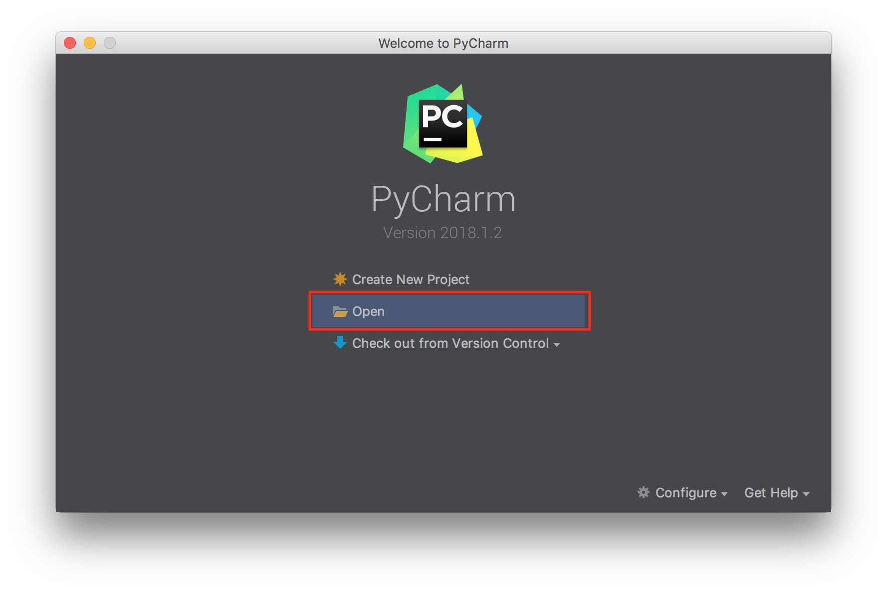
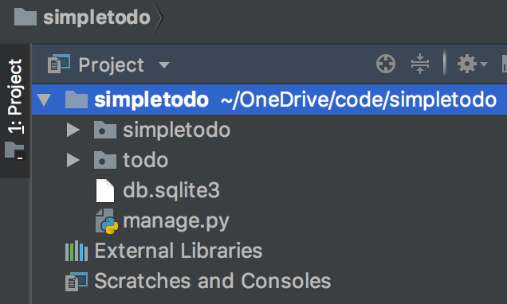
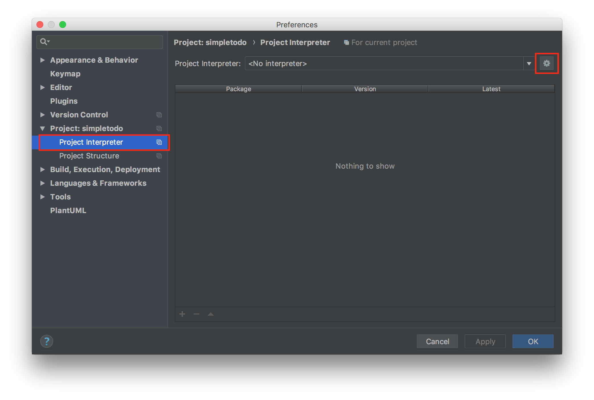
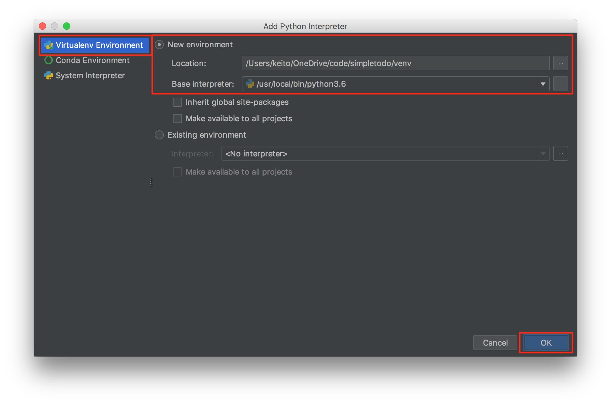
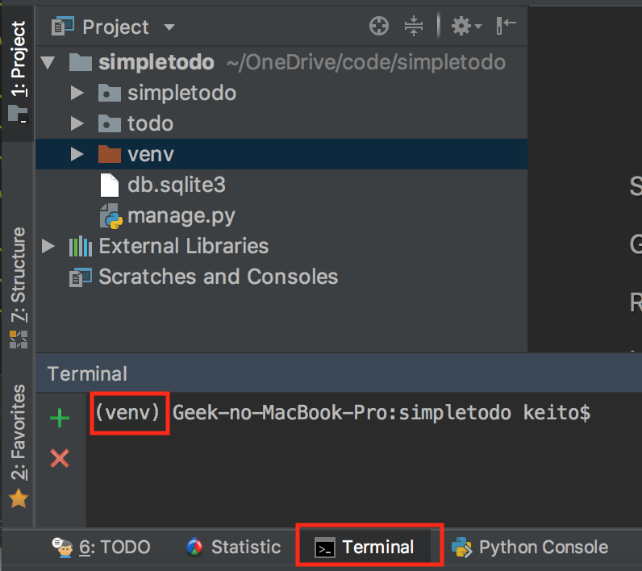
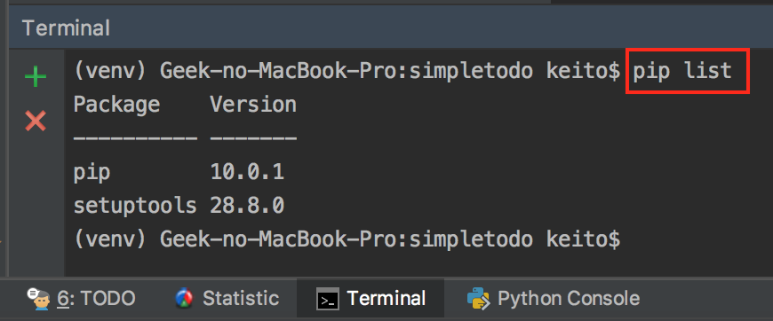
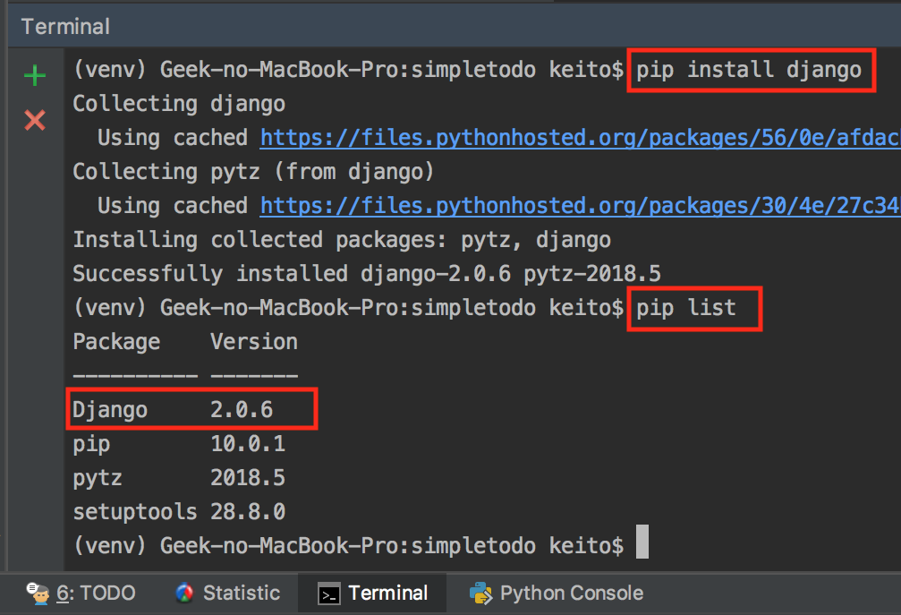
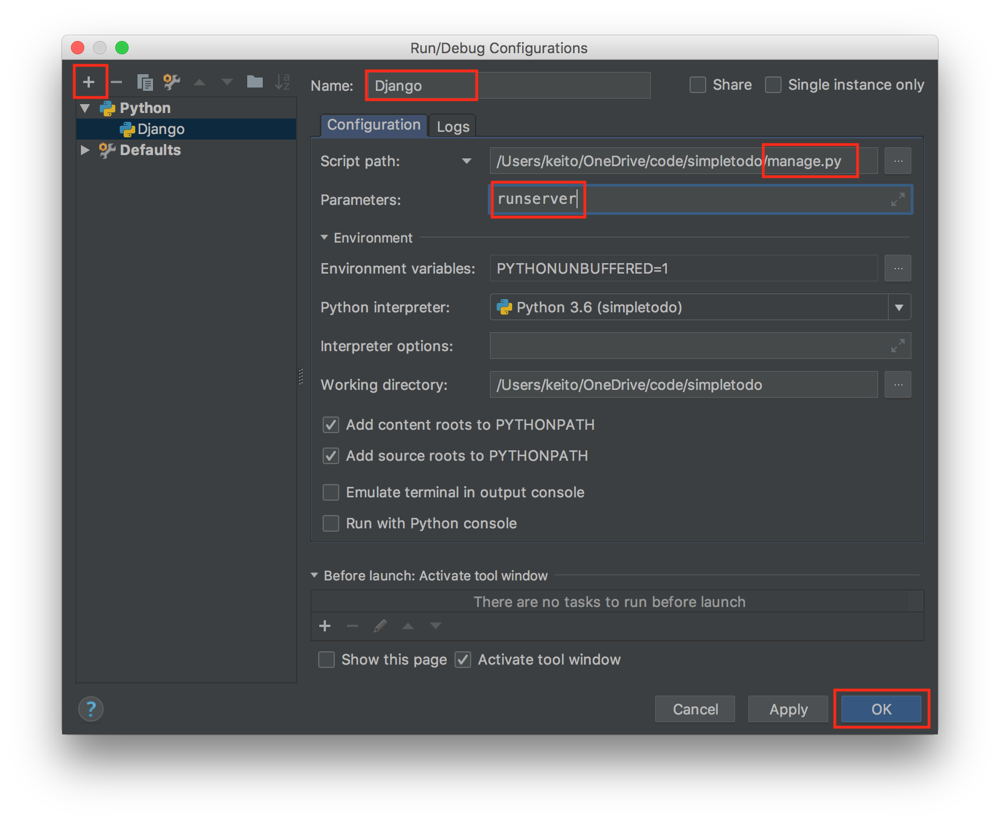
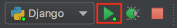
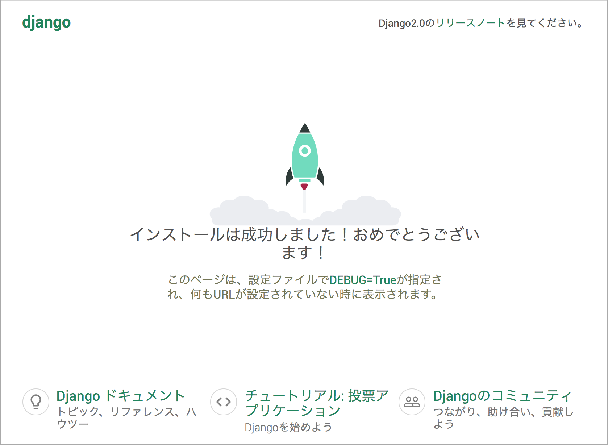

7. Djangoの準備
Djangoとは
Djangoとは、pythonで実装されたフルスタックのWebフレームワークです。 Pythonで一番メジャーなフレームワークになります。
PyCharmの設定
インストールしたPycharmを起動します。 起動したらopenを押して、作成したsimpletodoフォルダを開きます。

開くと、プロジェクトが以下のフォルダ構成になっています。 
まず、Interpreterの設定をします。
Windowsの場合
左上のメニューから、File > Settingsを押して、Settings画面を開きます。
Settings画面から、 Project > Project Interpreterを選択。
右上のギアアイコンから、「Add」を選択します。
Macの場合
左上のメニューから、PyCharm > Preferencesを押して、Preferences画面を開きます。
Preferences画面から、 Project > Project Interpreterを選択。
右上のギアアイコンから、「Add」を選択します。

選択が「New environment」になっていて、「Base interpreter:」が設定されていることを確認してください。 問題なければ、OKボタンを押します。 
OKボタンを押すと、venvというフォルダが作成されています。
この状態で、PyCharm下メニューの「Terminal」をクリックします。
Terminal画面で「(venv)」と表示されていたら、InterpreterとVirtualenvの設定は完了です。

venvとは
venvとは、Pythonの仮想環境です。(Virtual environments)
コマンドラインドでvenv環境を作る場合、フォルダ名は自由に設定できるのですが、通常venvというフォルダ名にします。
python -m venv [newenvname]
python -m venv venv
Terminalで pip list と入力して、Enterキーを押してください。
すると、新規作成したvenvなので、Django等が入っていない状態なのが分かります。

¥!!! Note
以下のような警告メッセージが表示された場合は、pip install --upgrade pipを実行してください。
You should consider upgrading via the 'pip install --upgrade pip' command.
それでは、venv環境にDjangoをインストールします。
1 | pip install django |
その後、インストールできたことを確認します。
1 | pip list |
以下のように、Django2.xがインストールされていたら完了です。 
Djangoの起動
メニューのRunから、Edit Configurationsを選択。
Run/Debug Configurations画面で、左上の「+」をクリックし「Python」を選択します。
以下のように設定して、OKボタンを押します。
1 2 3 | Name: Django Script path: manage.py Parameters: runserver |

上メニューの「緑のRunボタン」をクリックすると、Djangoが起動します。

localhostにアクセスして、Djangoが起動しているか確認します。
http://localhost:8000/

Djangoの日本語対応
simpletodo/settings.pyを開いて、最後尾にあるコードを変更します。
1 2 3 4 5 | LANGUAGE_CODE = 'en-us' TIME_ZONE = 'UTC' ↓↓↓↓↓ LANGUAGE_CODE = 'ja' TIME_ZONE = 'Asia/Tokyo' |
保存するとDjangoが自動で再起動するので、画面が日本語化していたら完了です。

Note
たまにLANGUAGE_CODE=jaではなく、LANGUAGE_CODE=ja-jpと解説しているサイトがありますが、間違いです。
日本は日本語しか使わない為、jaのみとします。
パッケージの書き出し(requirements.txtの作成)
今まで使ってきたpip(ピップ)は、Python用のパッケージ管理ソフトになります。
「インストールしたパッケージ一覧の書き出し」も可能なので、やっておきましょう。
Terminalで、以下のコマンドを実行してください。
1 | pip freeze > requirements.txt |
すると、以下の内容でrequirements.txtが作成されます。
1 2 | Django==2.0.6 pytz==2018.5 |
このrequirements.txtをPyCharmで開くと、(インストールされていなければ)パッケージのインストール確認画面が表示されます。
また、以下のコマンドでも、パッケージを一括インストールすることができます。
1 | pip install -r requirements.txt |
次は、DjangoでHello wolrdを表示してみます。